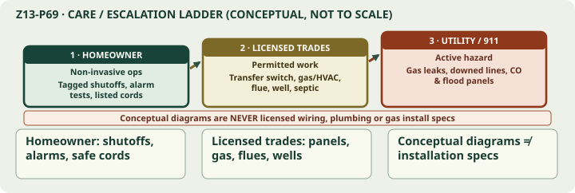

Z13-P69 · Home survival and utilities · New manuscript
Escalate regulated electrical, gas, HVAC, well, and septic work to licensed trades
Maintain a clear legal and life-safety boundary between safe homeowner outage actions and regulated installations requiring permits and licensed trades.
When it applies · Every residential electrical, combustion-heating, fuel-piping, domestic well, and onsite wastewater decision in Z13.
Equipment · Printed list of local licensed electrician, HVAC/gas technician, licensed well contractor, plumber, and municipal code-enforcement contacts.

Actions
- Restrict homeowner outage actions strictly to non-invasive operation and inspection: operating tagged main shutoffs, testing alarms, plugging UL-listed cords/battery stations within ratings, clearing snow from exterior vents, and switching off damaged circuits.[U14, U02, U12]
- Escalate ALL regulated work to properly licensed, permitted trades: electrical transfer switches/interlocks/panel repairs, gas piping/appliance restoration/relighting, wood-stove/chimney flue installation or sweep repairs, submersible well electrical/disinfection work, and flooded septic inspections.[U02, U11, U18, U06, U07]
- Remember that local Minnesota and municipal building/fire codes vary by city, county, and rental lease—always verify permits and manufacturer manuals rather than improvising home systems from diagrams.[U03, U06, ED]
Failure recognition · Installing an unpermitted home generator panel tie-in or modifying gas furnace vents using internet tutorials during an outage.[U02, U11]
Verify · Confirm licensed contractor contacts sit in the household binder and zero DIY wiring, gas-line, or well-disinfection work is attempted.[U14, U02, U06]
Stop or change course · Any code-regulated utility failure or safety-critical repair halts DIY work immediately in favor of safe shutoff/evacuation and licensed professionals.[U02, U11]
Evidence and editorial notes
- U02 · CPSC · CPSC Warns of Generator, Carbon Monoxide and Fire Hazards Ahead of Hurricane Season (2026 seasonal agency guidance)
- Section: Use portable generators outdoors; keep exhaust away · Conditions: Portable generator during household outage
Support: Run outdoors at least 20 feet from buildings and direct exhaust away. Use approved connections as the manual dictates; licensed electrical work governs transfer to a building. Never backfeed.
Limitations: Distance alone does not guarantee safety. Local code and exact equipment determine installation. · Conflicting evidence: See A02 claim audit for boundaries.
Editorial note: Core electrical isolation boundary across Z13 generator cards. · Specialist reviewer: Licensed electrician and fire safety
Primary source · checked 2026-11-24 - U03 · NFPA · Heating Fire Safety (current web edition)
- Section: Heating Equipment Safety > Space Heaters, Fireplaces, and Clearances · Conditions: Residential winter heating and supplemental backup heating
Support: Maintain at least a 3-foot clearance between anything flammable and any heating source (space heaters, fireplaces, wood stoves), inspect chimneys annually, use only the fuel specified by the heater manufacturer, and never use kitchen ovens to heat homes.
Limitations: Unvented fuel-burning heaters also create severe carbon monoxide and indoor air hazards; local building codes govern installations. · Conflicting evidence: None; aligns with CPSC-C and READY-HOME-F.
Editorial note: Grounds safe supplemental heating clearances and stop boundaries in Z13. · Specialist reviewer: Fire safety and licensed HVAC trades
Primary source · checked 2026-11-24 - U06 · Minnesota Dept. of Health · Wells and Borings Safety (current web edition)
- Section: Wells and Borings > Minnesota Private Well Standards and Disinfection · Conditions: Minnesota and Upper Midwest private residential wells
Support: Use a licensed Minnesota well contractor for wellhead repair, electrical pump work, or shock disinfection after flooding or backflow; maintain sanitary well caps and isolate well casings from surface snowmelt and agricultural runoff.
Limitations: DIY well-cap removal or improper chlorine mixing risks aquifer contamination and electrical shock. · Conflicting evidence: None; regionalizes EPA-WELL for Minnesota conditions.
Editorial note: Anchors Upper Midwest private-well resilience and licensed-trade handoff. · Specialist reviewer: Minnesota environmental health and licensed well trades
Primary source · checked 2026-11-24 - U07 · U.S. EPA · Septic Systems: What to Do after the Flood (Current web edition)
- Section: Do I pump my tank during flooded or saturated drainfield conditions?; After the flood · Conditions: Flooded or saturated septic drainfield
Support: Conserve water and do not pump while the field is flooded or saturated. Arrange professional inspection and qualified servicing as conditions permit.
Limitations: Avoid use until local or professional directions allow. Tank buoyancy and recovery depend on site and system. · Conflicting evidence: See A02 claim audit for boundaries.
Editorial note: Grounds septic-system limits and outage water conservation in Z13. · Specialist reviewer: Onsite wastewater engineering and public health
Primary source · checked 2026-11-25 - U11 · U.S. DOT PHMSA · Pipeline Leak Recognition and What to Do (Current web edition)
- Section: What to DO; What Not to Do · Conditions: Suspected gas or pipeline leak
Support: Leave the affected area and call 911 and the provider from safety. Avoid spark sources and leave valve and restoration decisions to authorized responders.
Limitations: Do not transpose outdoor hazmat sheltering directions to a gas leak inside the dwelling. · Conflicting evidence: See A02 claim audit for boundaries.
Editorial note: Establishes strict utility-leak evacuation and licensed restoration gates. · Specialist reviewer: Gas utility safety and fire service
Primary source · checked 2026-11-25 - U12 · CPSC · CO Alarms (current web edition)
- Section: Home Alarms > Smoke, Carbon Monoxide, and Battery Backup Readiness · Conditions: Occupied residences with fuel-burning furnaces, water heaters, attached garages, or outage generators
Support: Maintain interconnected or battery-backed CO and smoke alarms on every floor and outside sleeping rooms, replace expired sensors on schedule, and keep exterior furnace/dryer/exhaust vents clear of drifting snow.
Limitations: Blocked high-efficiency PVC furnace intake/exhaust pipes in heavy snow can force CO back indoors or lock out heating systems. · Conflicting evidence: None; integrates with C09 and Z13-R03.
Editorial note: Connects winter snow-drift vent inspection to household CO prevention. · Specialist reviewer: Carbon monoxide safety and residential HVAC
Primary source · checked 2026-11-24 - U14 · FEMA / Ready.gov · Make a Plan (current web edition)
- Section: Household Emergency Planning, Utility Maps, and Outage Checklists · Conditions: Pre-outage residential documentation and household drills
Support: Document main water, electrical panel, and gas shutoff locations, utility outage phone numbers, medical power registries, and neighborhood check-in networks on paper before storms hit.
Limitations: Utility medical-priority lists do not guarantee uninterrupted power during major ice storms or grid blackouts. · Conflicting evidence: None; bridges Z01 planning with Z13 household infrastructure.
Editorial note: Grounds household utility mapping and vulnerable-occupant contingencies. · Specialist reviewer: Emergency management and accessibility specialist
Primary source · checked 2026-11-24 - U18 · NFPA · Heating Fire Safety (current web edition)
- Section: Wood Stoves, Chimneys, Ash Disposal, and Fuel Storage Safety · Conditions: Residences heated by properly installed wood stoves or fireplaces
Support: Burn seasoned dry wood only, clean creosote-prone chimneys regularly through qualified sweeps, empty cooled ashes strictly into lidded metal containers set outdoors well away from decks and structures, and never burn treated lumber or trash indoors.
Limitations: Embers stay hot enough to ignite cardboard or wood decks days after a fire appears dead. · Conflicting evidence: None; critical winter wood-heat fire prevention boundary.
Editorial note: Covers solid-fuel residential heating maintenance and ash-fire failure modes. · Specialist reviewer: Fire safety and certified chimney/HVAC trades
Primary source · checked 2026-11-24
Source lineage · Astra A01 Specialist Register and NFPA/EPA Guidance; new manuscript · Classification · New manuscript.